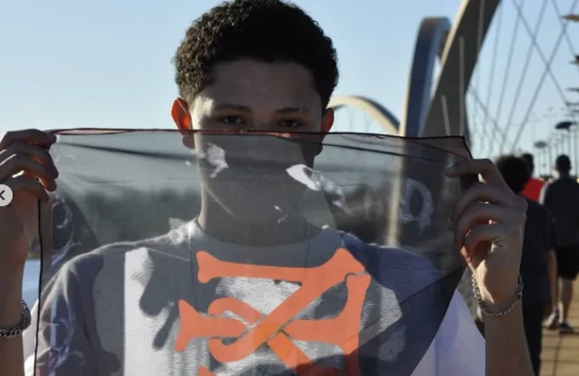
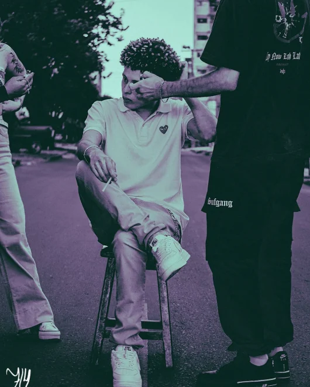
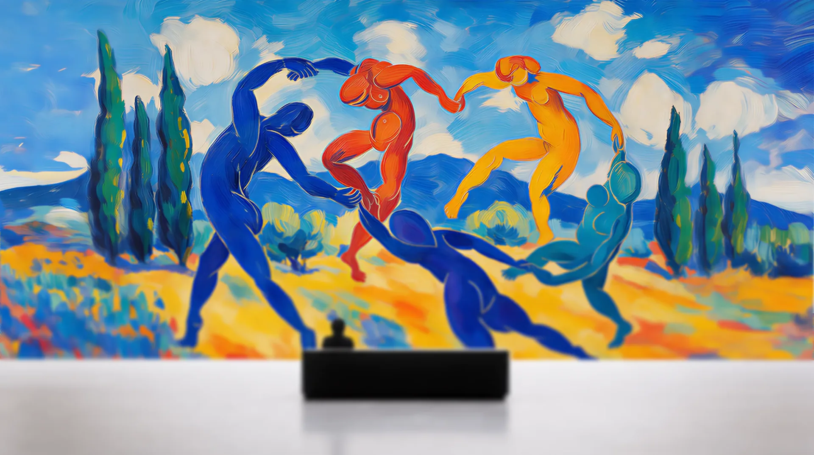
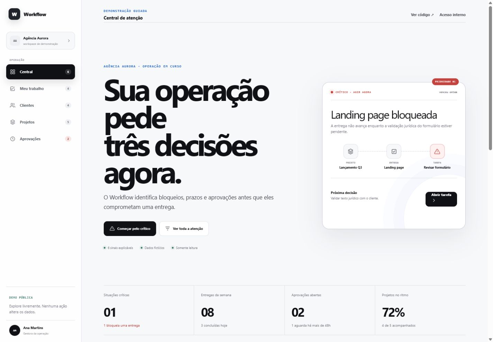
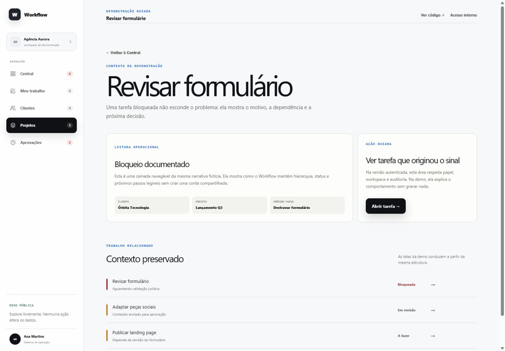
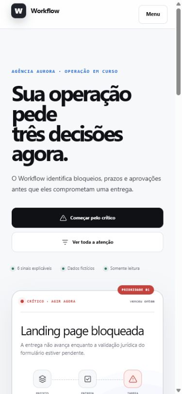
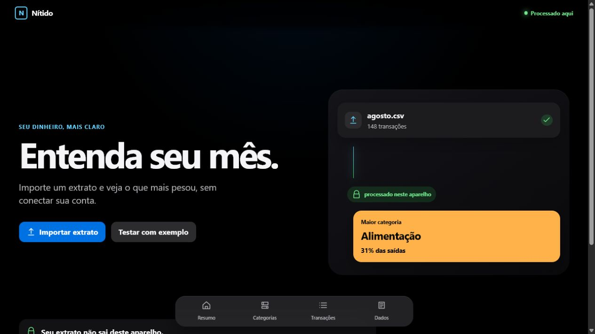
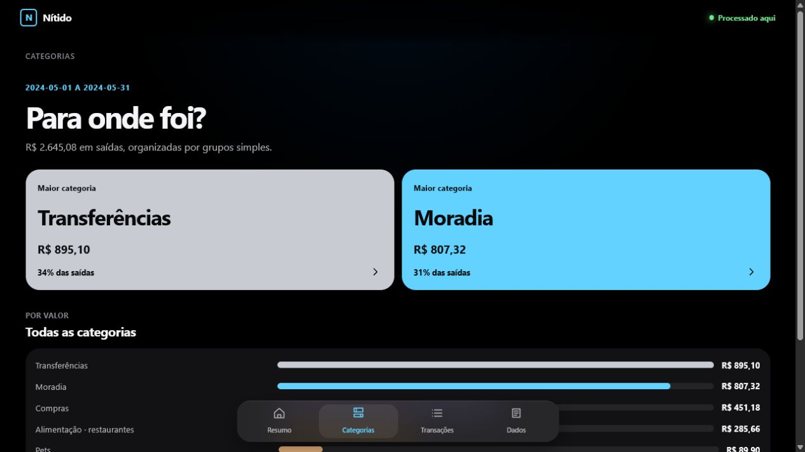
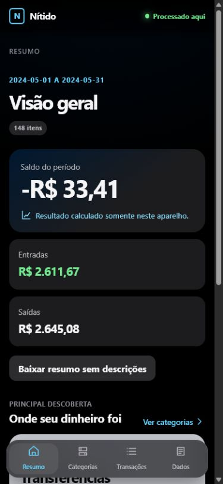

Junior front-end & full-stack developer
Brazil / Remote
Digital work
built with
gravity.
I build responsive web interfaces and applications with React, Next.js and Node.js, from implementation to deployment.
Portfolio / 2026
Profile / How I work
I understand. Then I build.
I turn requirements into responsive interfaces and web applications, balancing clarity, performance and maintainable code.
Junior developer
Freelance projects
Brazil / Remote
See professional overview ↓
Chapter 01 / Curiosity
Observe
I follow
the question.
Curiosity is where my work starts: looking closer, learning fast and staying open long enough to find a better path.
Curiosity
Learning
Evolution
Personal archive / Night study
Light / Shadow / 01
Chapter 02 / Intent
Understand
The problem
comes first.
Before choosing a stack, I look for context, constraints and the real need. Good code begins with a clear reason to exist.

Personal archive / Through the layer
Context / Signal / 02
Chapter 03 / Craft
Connect
Interface meets
infrastructure.
I am drawn to the point where visual care, intuitive use, performance and dependable engineering become one product.
Design
Performance
Systems

Personal archive / Street system
Interface / Structure / 03
Chapter 04 / Method
Refine
Details hold
the whole.
Clear structure, honest communication and careful finishing are not polish added later. They are part of how I build.
Clarity
Quality
Continuity
Personal archive / Classical frame
Detail / Material / 04
Chapter 05 / Rhythm
Listen
Code is not my
only language.
I play guitar, have worked with voice and released songs on Spotify. Music taught me that rhythm, pause and intention shape every experience.
Personal archive / Studio process
Voice / Rhythm / 05
Chapter 06 / Range
Move
Built in Brazil.
Open to the world.
Based in Brazil and available remotely, I am open to national and international teams where I can contribute, collaborate and keep growing.
Personal archive / Moving frame
Brazil / Remote / 06
I begin with the unknown. Curiosity comes before certainty. I stay with the question long enough to understand what the product truly needs.
Structure gives ideas somewhere to live. Visual clarity, intuitive use and maintainable engineering work as one system—not separate finishing layers.
Good work is made of relationships. I connect interface, performance and dependable code so each decision supports the next.

Another rhythm keeps the work human. Music, guitar and voice sharpen my sense of timing, contrast and pause—qualities I also bring to digital experiences.
Built in Brazil. Open to the world. Available for remote collaboration with national and international teams, ready to contribute, learn and evolve together.
01
/ 05
Slide 1 Slide 2 Slide 3 Slide 4 Slide 5
ORBITAL HANDOFF / SIGNAL 02
01 → 02
Range / Remote
Local signal
Brazil / Remote
Open to junior front-end or full-stack roles.
Available remotely and for freelance projects.
Featured projects
Verified work
00
01
02
03
04
Operations, private financial analysis, healthcare and solar energy.
↘
Project coverage
04 / 04
Offline / local-first
1/4
End-to-end practice
Current scope
Discovery
Architecture
Interface
Performance
Deploy
Evolution
Expected completion
In progress
2026
Systems Analysis & Development / UNIP
Core stack
08
React
Next.js
TypeScript
Node.js
Tailwind CSS
Supabase
PostgreSQL
GitHub Actions
Selected work / 04 builds
Built around
real needs.
Four projects tracing my progression from responsive websites to multi-tenant and local-first products with automated testing.
Choose a transmission
01 / 05
SaaS / Operations
Workflow
Format
SaaS
Focus
Operations
Route
Case study
Open project
↗
Drag, use the arrows or choose a signal to inspect a project.
←
→
01 / 05
Work flowFull-stack product project / Operations management SaaS
I built a SaaS for small agencies to organize clients, projects, deliverables and tasks in one consistent operational hierarchy.
Stack
Next.js / React / TypeScript / Supabase / PostgreSQL / Vitest / Playwright / Vercel
Result
Multi-tenant application with server-side authorization, PostgreSQL RLS, automated tests and a safe read-only demo
Visit live project ↗
01
Context
Small agencies can lose deadlines and approvals when client work is scattered across disconnected tools.
02
Product decision
I connected clients, projects, deliverables and tasks in one hierarchy, then surfaced the next decision instead of another generic dashboard.
03
Evidence
The public read-only demo lets anyone follow a critical signal to its blocked task using safe, entirely fictitious data.



Interface evidence
From the attention center to the blocked task, the operational context remains visible across desktop and mobile.
02 / 05
Nít idoFront-end product project / Private local-first financial analysis
I built a responsive PWA that imports CSV and OFX statements, processes financial data on-device and turns transactions into explainable dashboards without requiring an account.
Stack
React / TypeScript / Vite / IndexedDB / Web Workers / Vitest / Playwright / Cloudflare Workers
Result
Private offline-capable analysis, 24 automated tests, E2E coverage and CI/CD to Cloudflare Workers
Visit live project ↗
01
Context
Bank statements contain useful answers, but they are difficult to read and too sensitive to send to an unknown server.
02
Product decision
I designed an account-free flow that processes CSV and OFX files on-device and turns raw transactions into plain-language categories and insights.
03
Evidence
The built-in example converts 148 fictitious transactions into a private, responsive report that remains available offline.



Interface evidence
Privacy is part of the interface: the product explains where processing happens while keeping the financial reading direct.
03 / 05
Clínica Voe Alto
Front-end freelancer / Healthcare website
I developed the interface for a multidisciplinary clinic website, organizing accessible content, responsive navigation and contact through WhatsApp.
Stack
React / Vite / Tailwind CSS / JavaScript
Result
Responsive website with a direct WhatsApp contact path
Visit live project ↗
04 / 04
Good Sollar
Full-stack freelancer / Institutional landing page
I developed a responsive landing page for a solar-energy company, with reusable React components, technical SEO and automated deployment.
Stack
React / Vite / Tailwind CSS / GitHub Actions
Result
Landing page published with a mobile-ready interface
Visit live project ↗
Technical skills / Applied in projects
HTML5
Interface
CSS
Interface
JavaScript
Interface
TypeScript
Interface
React
Interface
Next.js
Interface
Tailwind CSS
Interface
Vite
Interface
Node.js
Data
Supabase
Data
PostgreSQL
Data
Vitest
Quality
Playwright
Quality
Git
Delivery
GitHub
Delivery
GitHub Actions
Delivery
Vercel
Delivery
Cloudflare
Delivery
Path / Practice + education
Learning by
shipping.
Experience 01
Full-stack developer
Freelance / Current practice
I turn project requirements into responsive interfaces and web applications, then version, deploy and maintain each delivery.
Good Sollar
Clínica Voe Alto
Education 02
Systems analysis & development
Universidade Paulista — UNIP / In progress
Degree in progress at Universidade Paulista (UNIP). Expected completion: December 2026.
Open to conversations
Available.
Ready to grow.
Work
Hire / Freelance / Consulting
Mode
Remote / English-friendly teams
Preferred
Evening period